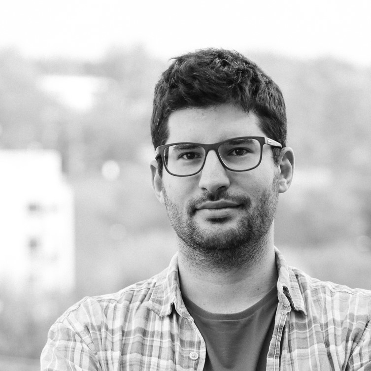

The Computational Hive
University of Applied Arts Vienna
Andrea Rossi
Andrea Rossi is a computational designer and founder of The Computational Hive, a consultancy specializing in design automation for architecture and engineering. His work bridges research and practice, translating advanced computational design methods into real-world tools.
He is the developer of Wasp, an open-source toolkit for combinatorial design, and a researcher at the University of Applied Arts Vienna. He holds a PhD with distinction from TU Darmstadt and has worked at the University of Kassel, Coop Himmelb(l)au, and ETH Zurich.